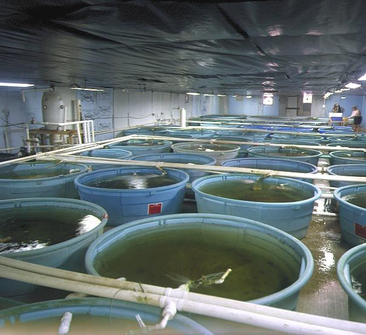
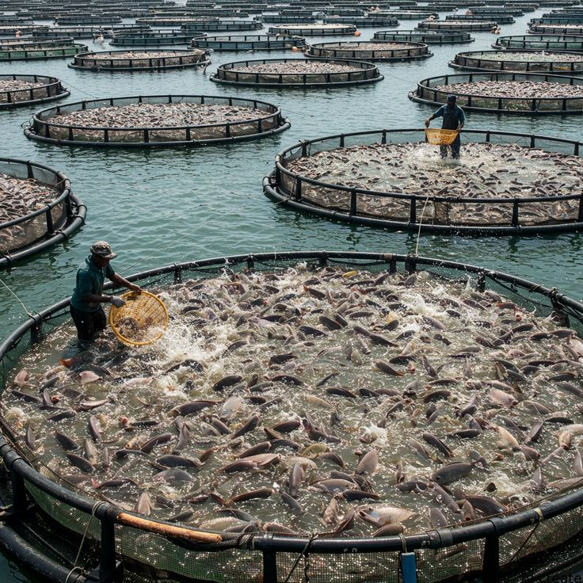
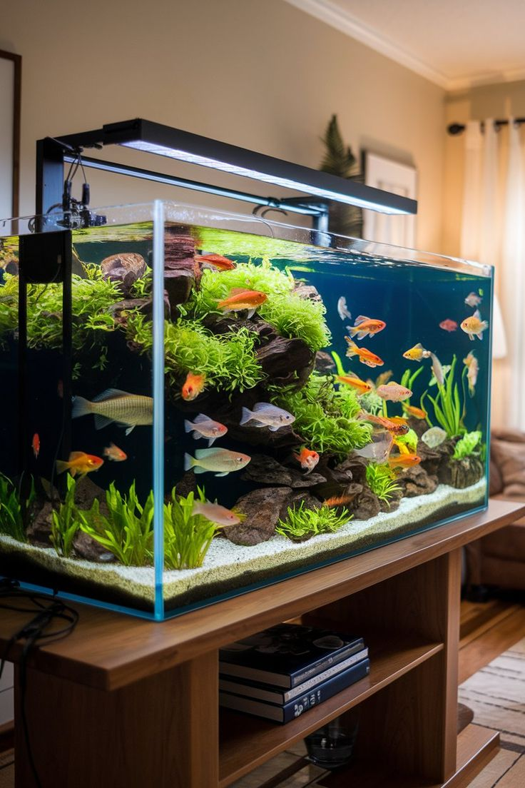
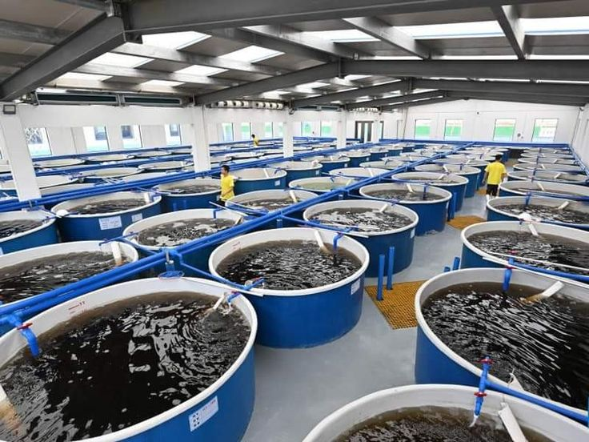
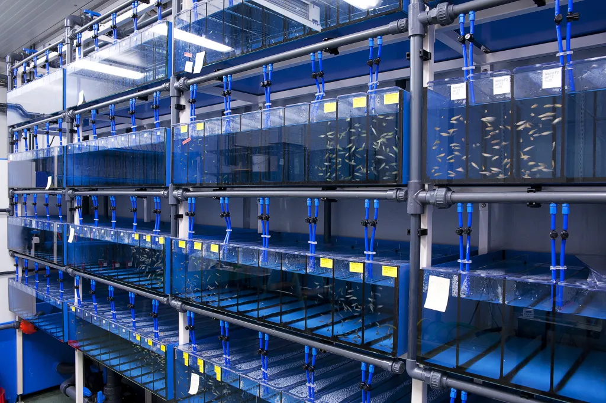

Mutsinzi Alex, Reg No: 25/U/03480PS | Std No: 2500703480
Kahuma Walid, Reg No: 25/U/26619 | Std No: 2500726619
Mugabi Robinson, Reg No: 25/U/03456/EVE | Std No: 2500703456
Nanfuuka Bonitah, Reg No: 25/U/03527/PS | Std No: 2500703527
Okuja Emmanuel Dila John, Reg No: 25/U/28777/PSA | Std No: 2500728777
Group 21
Department of Computer Science
Makerere University, Kampala, Uganda
AquaPulse is a Smart IoT Fish Feeder designed to address the critical challenges facing smallholder aquaculture in East Africa. By combining an affordable ESP32 microcontroller with a Firebase-connected web dashboard, real-time ultrasonic hopper monitoring, and offline-first RTC scheduling, AquaPulse delivers precise, automated feed dispensing that reduces waste by up to 30% and eliminates the need for daily dawn/dusk site visits.
Table of Contents
Problem Statement
Smallholder fish farmers in Uganda face four interconnected challenges that stifle productivity and profitability:
- Inconsistent Manual Feeding: Irregular feeding schedules stunt Nile Tilapia growth and stagger overall aquaculture yields.
- Feed Waste: Wasted feed accounts for up to 30% of operating expenses due to wind drift and over-application.
- Prohibitive Costs: Existing commercial automated feeders are imported and priced at $300–$1,500+, putting them out of reach for local smallholders.
- No Remote Telemetry: Smallholders have no affordable, remote telemetry system to schedule feeds and monitor feed levels from their phones.
Project Objectives
- Affordable Hardware: Design an affordable, locally-sourced automated fish feeder using a standalone ESP32 DevKit.
- Web Dashboard: Build a web-based dashboard synced via Firebase Firestore for remote management and telemetry.
- Offline Resilience: Implement an offline-first scheduling fallback using a DS3231 RTC module to ensure feeding during WiFi drops.
- Power Isolation: Ensure hardware resilience by isolating high-current stepper motor rails to avoid ESP32 brownouts.
Project Requirements
Hardware Components
| Component | Specification / Purpose |
|---|---|
| ESP32 DevKit | Standalone microcontroller — WiFi + BLE, Arduino C++ firmware |
| 28BYJ-48 Stepper Motor + ULN2003 | Feed dispenser mechanism with driver board |
| 16×2 I2C LCD | Local display of hopper capacity and system status |
| HC-SR04 Ultrasonic Sensor | Hopper fill-level measurement (with 1kΩ/2kΩ voltage divider on ECHO pin) |
| DS3231 RTC Module | Local timekeeping for offline-first scheduling fallback |
| Piezo Buzzer & LED | Audio/visual feedback for feed events and alerts |
| Voltage Divider (1kΩ / 2kΩ) | Steps down 5V HC-SR04 ECHO to ESP32-safe 3.3V |
Software Stack
| Layer | Technology |
|---|---|
| Firmware | Arduino C++ with hardware button interrupts and Firestore polling |
| Backend / Cloud | Firebase Firestore (real-time NoSQL database) |
| Web Dashboard | React + TypeScript + Vite, using Firestore SDK for live metrics |
Target Users

Commercial Warehouse Fish Farmers
Requires automated dosing, history logs, and multi-feeder dashboards for large-scale operations managing hundreds of ponds.

Local Smallholder Fish Farmers
Needs cost-effective automation to eliminate daily dawn/dusk site visits and reduce feed waste by up to 30%.

Leisure Fish Keepers (Aquariums & Ponds)
Wants remote scheduling, live status updates, and mobile warning alerts for home and ornamental aquaculture.

Cooperative Fish Farms
Shared aquaculture communities needing joint dashboard access to track inventory and coordinate feeding across multiple sites.

Aquaculture Research Facilities
Requires exact portion controls and detailed audit logs for feed studies and growth experiments.